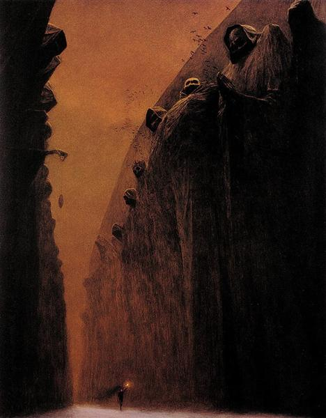
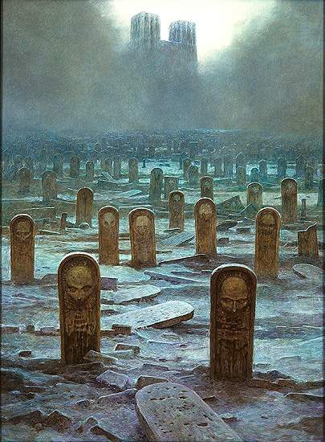
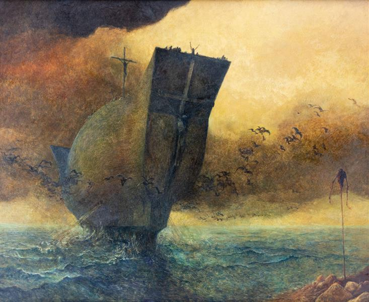
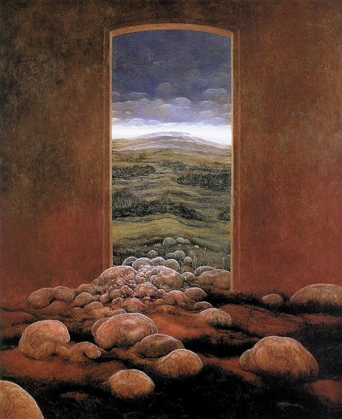
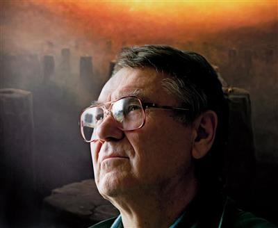
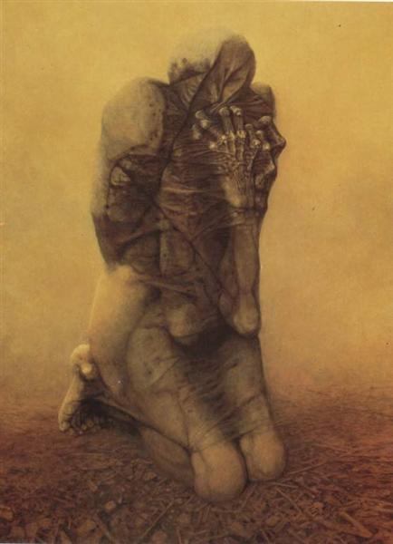
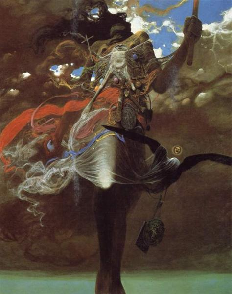
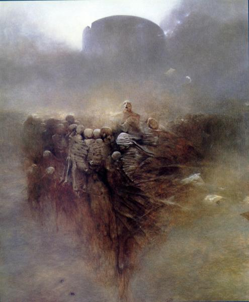

Fantastik Dönem • Yağlı Boya
İsimsiz (Gotik Mimari)
Devasa, organik dokulu katedral yapıları ve puslu atmosferle kurulan ölçek hissi.
Polonyalı ressam, fotoğrafçı ve heykeltıraş Zdzisław Beksiński; terk edilmiş katedraller, kemiksi mimari yapılar ve tekinsiz atmosferlerle 20. yüzyılın en özgün karanlık sürrealizm dünyasını inşa etti.
Eserleri İncele Biyografi
Beksiński eserlerine isim vermemiş, izleyiciyi kendi yorumuyla baş başa bırakmıştır.

Devasa, organik dokulu katedral yapıları ve puslu atmosferle kurulan ölçek hissi.

Zaman kavramının silindiği, çorak peyzajlar içinde beliren tekinsiz insan silüetleri.

Sanatçının son dönemlerinde bilgisayar teknolojisiyle ürettiği deneysel görsel kurgular.
Mimarlık eğitiminden karanlık sürrealizmin zirvesine uzanan bir üretim disiplini.

Zdzisław Beksiński (24 Şubat 1929 – 21 Şubat 2005), Polonya'nın Sanok kentinde doğdu. Kraków Politeknik Üniversitesi'nde mimarlık eğitimi aldıktan sonra sanat hayatına fotoğrafçılık, karakalem çizim ve heykel ile başladı. Mimarlık geçmişi, ilerleyen yıllarda tablolarındaki anıtsal ve ürkütücü yapıların temelini oluşturdu.
1960'ların sonundan 1980'lere kadar uzanan ve kendi deyimiyle "Fantastik Dönem" olarak adlandırdığı süreçte, bugün dünyaca tanınan yağlı boya eserlerini üretti. Çalışırken sessizlikten kaçındığı ve sürekli klasik müzik dinlediği bilinir. Eserlerinin hiçbirine isim vermeyerek, izleyicinin metinle yönlendirilmeden doğrudan görsel atmosferle yüzleşmesini istedi.
1990'lı yıllarda geleneksel tuvalin yanına bilgisayar destekli dijital fotomontajı da ekleyerek yeni medya araçlarını sanatına entegre eden öncü ressamlardan biri oldu.
Sanatçının "İsimsiz" (Untitled) olarak bıraktığı yağlı boya ve dijital seçkisi.
Gotik mimarinin organik ve kemiksi dokularla iç içe geçtiği anıtsal kompozisyon.
Sıcak toprak tonları ve koyu gölgelerle yaratılan kıyamet sonrası atmosfer.
Sürrealist anatomi ve yoğun doku kullanımıyla dikkat çeken figüratif çalışma.

Derin perspektif ve dramatik ışık kaynağıyla kurgulanan mimari boşluk.

Sanatçının çizgi disiplini ve form araştırmalarını yansıtan erken dönem çalışması.

Bilgisayar destekli görsel manipülasyonla üretilmiş geç dönem eseri.
Beksiński'nin en kapsamlı koleksiyonu ve proje iletişim bilgileri.
Zdzisław Beksiński'nin tüm sanatsal mirası ve yüzlerce orijinal eseri, vasiyeti üzerine doğduğu şehirdeki Sanok Tarih Müzesi'nde sergilenmektedir.